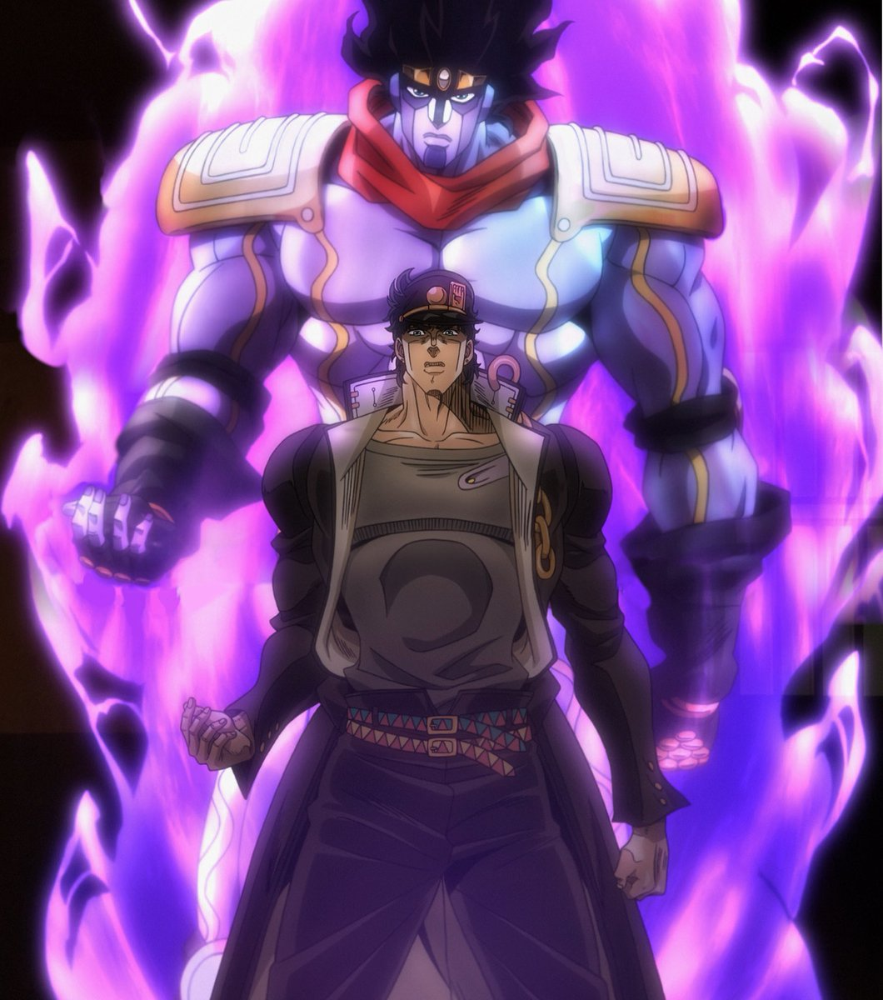
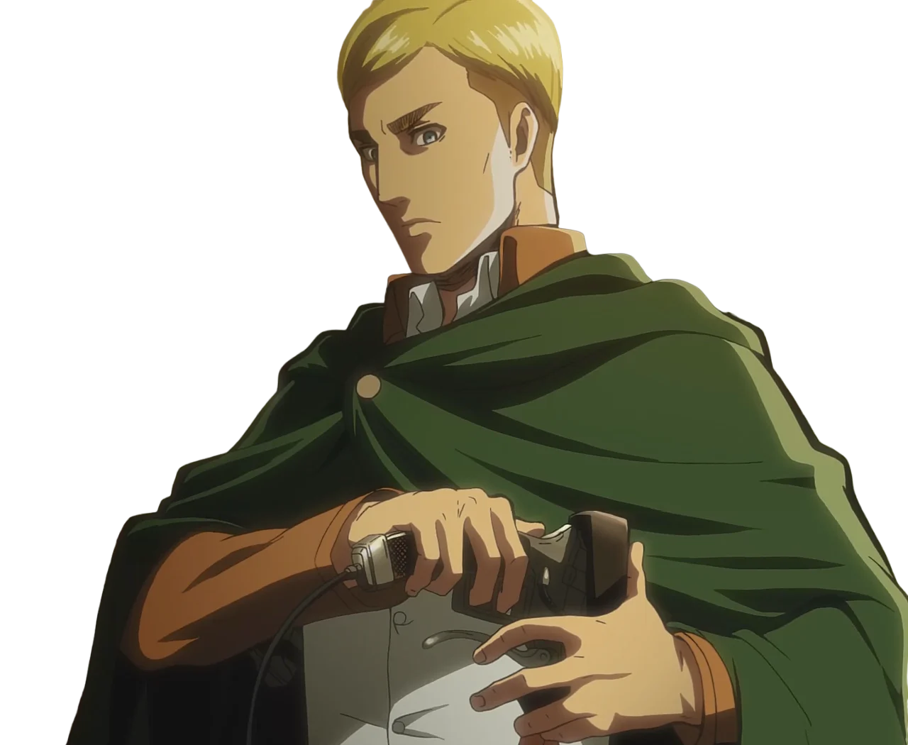

Jotaro Kujo (Jojo's Bizarre Adventures)

Jotaro Kujo is known for his nonchalant personality, strong will, and iconic design. He is the main
protagonist of Jojo's Bizarre Adventures season 3 and always gives off an intimidating presence.
His Stand, Star Platinum(the purple guy in the image), is one of the most iconic powers in anime
due to his astronomical skill set and cool design. Jotaro represents compassion, a strong sense of justice,
and strength, which is why he remains one of the best anime characters in my opinion.
Pain (Naruto: Shippuden)

Pain is a powerful and complex villain whose philosophy makes him memorable.
Pain was the leader of an evil organization called "The Akatsuki".
His philosophy about world peace through pain and suffering is what makes him such a great character,
well his unique abilities also makes him much cooler. He believes that people can only understand each other through
shared pain, and while his methods are drastic, his ideas make the audience think about the bigger picture of breaking
the cycle of war and hatred.
He is definetely one of my favorite anime villains because his views are so understandable and he is an unforgettable chracter overall.
Here is a cool video of Pain explaining the peace that he wants to achieve:
Pain's Cycle of Hatred
Fun Fact: Pain is not actually one character. Technically it is a group that consists of one main body
controlling six corpses, all with different abilities.
Here is a reddit comment that explains all of their abilities:
All Abilities of Pain
Erwin Smith (Attack On Titan)

Erwin is arguably one of the best leaders in all anime history. He is a fearless and courageous captain
known for his remarkable intelligence and sacrifice. Without question, he is always ready
to make difficult decisions and sacrifices to save humanity. Erwin is considered a morally grey
character because he sacrifises thousands of soldiers to prove a theory. He is labeled as a devil
due to the fact that he prioritizes goals over morality and manipulates his comrades. He constantly
carries emotional weight because of this "devil" status.
Here is a video of Erwin leading a charge, almost dying in the process!:
Commander Erwin - Advance!
Here is a short story by Matthew Starkey that expains some of Erwin's actions:
Erwin Smith — Leader, Warrior, Devil
Why Were They Chosen?
I chose all of these characters because their traits and actions exceed far beyond simply being a strong character. Each character has their own unique presence and reason for crucial talking points involving anime topics. They all display dedication and strong motivations toward their own goals. These three chracters are some of the best because they perfectly blend personality and meaning in such a way that makes them memorable.